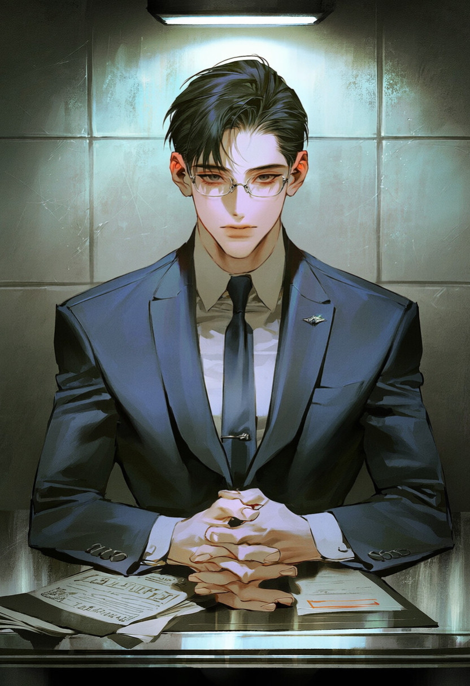

<div style="position:relative;left:50%;width:100vw;min-height:100vh;margin-left:-50vw;padding:18px 14px 34px;box-sizing:border-box;background:#080d12;color:#e8edf0">
<div lang="ko" style="width:100%;max-width:740px;margin:0 auto;padding:18px 14px 34px;box-sizing:border-box;overflow:hidden;background:radial-gradient(ellipse at 50% 0%,#243744 0,#121b23 34%,#080d12 78%);color:#e8edf0;font:14px/1.7 Arial,'Noto Sans KR','Malgun Gothic',sans-serif">
<div style="display:flex;justify-content:space-between;gap:8px;padding:5px 2px 12px;border-bottom:1px solid #34434c;color:#91a1aa;font-size:9px;letter-spacing:.16em"><span><b style="color:#d4e0e5">BORDERLINE</b> / PERSONNEL ARCHIVE</span><span style="color:#94c6a5">● IDENTITY VERIFIED</span></div>
<div style="width:min(100%,430px);height:min(74vh,680px);min-height:490px;position:relative;margin:22px auto 0;overflow:hidden;border:1px solid #53636c;background:#101920;box-shadow:0 22px 64px #0009">
<div style="display:grid;width:100%;height:100%;place-items:center;background:linear-gradient(145deg,#182630,#0b1118);color:#71838e;font-size:10px;letter-spacing:.18em"></div>
<div style="position:absolute;inset:35% 0 0;background:linear-gradient(transparent,#080d12ed 94%);pointer-events:none"></div>
<div style="position:absolute;top:14px;left:14px;padding:5px 8px;border:1px solid #a4bac233;background:#0b1119cc;color:#c3d6df;font-size:8px;letter-spacing:.15em">BORDERLINE / PERSONNEL / K-INV-01</div>
<div style="position:absolute;right:15px;bottom:17px;left:17px;z-index:2"><div style="color:#a4c3d0;font-size:9px;letter-spacing:.17em">KOREAN-JAPANESE TASK FORCE · PROSECUTOR</div><div style="position:relative;display:inline-block;margin-top:5px;color:#f1f3f4;font-family:Georgia,'Noto Serif KR',serif;font-size:clamp(38px,11vw,58px);line-height:1.1;letter-spacing:.06em">강묵현 <span style="font-size:13px;color:#c2cbd0">姜默賢</span><span style="position:absolute;top:4px;left:0;width:100%;height:calc(100% - 8px);display:grid;place-items:center;box-sizing:border-box;transform:rotate(-1deg);border:1px solid #555;background:#020304;color:#df6268;font:900 10px Arial,sans-serif;letter-spacing:.24em">ACCESS DENIED</span></div><div style="margin-top:8px;color:#c1ced5;font-size:11px;letter-spacing:.08em">본래 신분 · 검사 · 잠입 수사관</div><div style="margin-top:9px;color:#87b99a;font-size:8px;letter-spacing:.14em">● PERSONNEL IMAGE / RESTRICTED</div></div></div>
<div style="width:min(100%,430px);margin:18px auto 0;color:#91a1aa;font-size:9px;letter-spacing:.16em"><span style="color:#86bdd4">01 / COVER ID CARD</span><span style="float:right">TOUCH TO VERIFY</span></div>
<details style="width:min(100%,430px);margin:8px auto 0"><summary style="display:block;box-sizing:border-box;width:100%;aspect-ratio:1.586;padding:14px;overflow:hidden;border:1px solid #b6d0dc;border-radius:13px;background:linear-gradient(135deg,#f0f6f8,#cbdce3 55%,#eaf0f2);color:#142b37;box-shadow:0 15px 38px #0006;cursor:pointer"><div style="display:flex;justify-content:space-between;padding:0 0 8px;border-top:5px solid #3284a8;color:#527180;font-size:8px;font-weight:bold;letter-spacing:.12em"><span>REPUBLIC OF KOREA</span><span>ID CARD</span></div><div style="display:flex;align-items:center;gap:12px;height:calc(100% - 30px)"><div style="width:26%;height:100%;overflow:hidden;border:3px solid white;border-radius:4px;background:#bbcbd1;box-shadow:0 3px 9px #223c4b33"><div style="display:grid;width:100%;height:100%;place-items:center;background:#d7e2e6;color:#607781;font-size:8px;letter-spacing:.1em"></div></div><div style="flex:1;min-width:0"><div style="color:#69818c;font-size:8px;letter-spacing:.12em">REGISTERED COVER IDENTITY</div><div style="margin:2px 0;color:#102d3b;font-size:clamp(22px,7vw,34px);line-height:1.1;font-weight:bold">강서준</div><div style="margin-bottom:8px;color:#317697;font-size:9px;font-weight:bold">회계 · 세무 실무 / 헤담 로지스</div><div style="display:grid;grid-template-columns:1fr 1fr;gap:5px 8px;color:#233e4a;font-size:9px"><div style="border-top:1px solid #aabfc8;padding-top:3px"><small style="display:block;color:#69818c;font-size:7px">CALL SIGN</small><b>서준 · 준</b></div><div style="border-top:1px solid #aabfc8;padding-top:3px"><small style="display:block;color:#69818c;font-size:7px">PLACEMENT</small><b>잠입 6개월</b></div><div style="border-top:1px solid #aabfc8;padding-top:3px"><small style="display:block;color:#69818c;font-size:7px">FORMER CAREER</small><b>회계·세무</b></div><div style="border-top:1px solid #aabfc8;padding-top:3px"><small style="display:block;color:#69818c;font-size:7px">STATUS</small><b>ACTIVE</b></div></div></div></div><div style="display:flex;justify-content:space-between;align-items:center;margin-top:5px;padding-top:5px;border-top:1px solid #aabfc8;color:#607781;font-size:7px;letter-spacing:.1em"><span>HEDAM LOGIS · COVER IDENTITY</span><span style="width:58px;height:12px;background:repeating-linear-gradient(90deg,#163d4c 0 2px,transparent 2px 4px,#163d4c 4px 5px,transparent 5px 7px)"></span></div></summary><div style="margin-top:5px;padding:15px;border:1px solid #b6d0dc;border-radius:10px;background:linear-gradient(135deg,#e9f1f4,#c4d8e0 55%,#eff4f5);color:#142b37;box-shadow:0 12px 28px #0005"><div style="color:#527180;font-size:8px;font-weight:bold;letter-spacing:.14em">VERIFIED TRUE IDENTITY · RESTRICTED</div><div style="margin-top:3px;color:#102d3b;font-size:26px;font-weight:bold">강묵현 <span style="font-size:12px;font-weight:normal">姜默賢</span></div><div style="color:#317697;font-size:10px;font-weight:bold">대한민국 검사 · 한일 공조 수사 잠입 요원</div><div style="display:grid;grid-template-columns:1fr 1fr;gap:7px;margin-top:12px;color:#233e4a;font-size:10px"><div style="border-top:1px solid #aabfc8;padding-top:4px"><small style="display:block;color:#69818c;font-size:7px">AGE / HEIGHT</small><b>38세 / 183cm</b></div><div style="border-top:1px solid #aabfc8;padding-top:4px"><small style="display:block;color:#69818c;font-size:7px">ASSIGNMENT</small><b>한일 공조 수사</b></div><div style="border-top:1px solid #aabfc8;padding-top:4px"><small style="display:block;color:#69818c;font-size:7px">ROLE</small><b>한국 측 잠입 요원</b></div><div style="border-top:1px solid #aabfc8;padding-top:4px"><small style="display:block;color:#69818c;font-size:7px">STATUS</small><b>IDENTITY CONFIRMED</b></div></div><div style="margin-top:10px;padding-top:7px;border-top:1px solid #aabfc8;color:#607781;font-size:7px;letter-spacing:.1em">카드를 닫으면 잠입 신분으로 복귀</div></div></details>
<div style="margin:31px 0 0;padding:17px 14px 19px;border-top:1px solid #593138;border-bottom:1px solid #593138;background:linear-gradient(110deg,#1a1215,#211619 48%,#171216);color:#e8edf0"><div style="color:#ef777e;font-size:9px;letter-spacing:.17em">CLASSIFIED PERSONNEL FILE · LEVEL 04</div><details style="margin-top:14px"><summary style="display:block;width:max-content;max-width:100%;margin:0 auto;padding:9px 20px 8px;transform:rotate(-3deg);border:3px double #dd404a;border-radius:3px;background:#180d10;color:#ed5961;text-align:center;font:900 15px/1.2 Georgia,serif;letter-spacing:.17em;box-shadow:0 5px 15px #0007;cursor:pointer"><span>ACCESS DENIED</span><small style="display:block;margin-top:4px;font:7px Arial,sans-serif;letter-spacing:.15em">기밀파일 · 권한 필요 · 눌러 열람</small></summary>
<article style="position:relative;box-sizing:border-box;margin:24px 0 4px;padding:0;overflow:hidden;border:1px solid #a99e89;border-radius:2px;background-color:#e9e2d3;background-image:linear-gradient(90deg,transparent 0,transparent 27px,#c36c6a55 28px,transparent 29px),repeating-linear-gradient(0deg,transparent 0 31px,#8797a01c 32px);color:#25313a;text-align:left;box-shadow:0 26px 52px #000a,0 5px 0 #a69b89,0 9px 0 #d2cab9">
<div style="padding:20px 15px 15px 40px;background:linear-gradient(90deg,#e4dccb,#f0eadc 70%,#e8e0d0);border-bottom:3px double #9a8c78;text-align:left"><div style="display:flex;justify-content:space-between;gap:8px;max-width:85%;margin-bottom:8px;color:#6d5d4e;font-size:7px;letter-spacing:.1em"><span>수사기밀문서 / 내부 열람용</span><b style="color:#963b3d">대외비 · 무단 복제 금지</b></div><div style="color:#6d5d4e;font-size:8px;letter-spacing:.12em">CASE NO. K-INV-01 / SEOUL JOINT TASK FORCE</div><div style="margin-top:4px;color:#1e2a30;font: bold 23px Georgia,'Noto Serif KR',serif">강묵현 <span style="font:normal 12px Arial,sans-serif">姜默賢</span></div><div style="margin-top:3px;color:#4f5b60;font-size:10px">대한민국 검사 · 한일 공조 수사 잠입 요원</div><div style="display:grid;grid-template-columns:1fr 1fr;gap:7px;margin-top:12px;padding-top:8px;border-top:1px solid #b9ae9c;color:#273840;font-size:9px"><div><small style="display:block;color:#7c7061;font-size:7px">SUBJECT</small><b>강묵현 / 본명</b></div><div><small style="display:block;color:#7c7061;font-size:7px">AGE · HEIGHT</small><b>38세 · 183cm</b></div><div><small style="display:block;color:#7c7061;font-size:7px">CLEARANCE</small><b>LEVEL 04 / 승인</b></div><div><small style="display:block;color:#7c7061;font-size:7px">FILE STATUS</small><b style="color:#963b3d">ACCESS GRANTED</b></div></div><div style="width:max-content;margin:12px 0 0 auto;padding:5px 8px;transform:rotate(-7deg);border:3px double #b73c3e;color:#b73c3e;font:900 8px Arial,sans-serif;letter-spacing:.12em">ACCESS GRANTED</div></div>
<div style="padding:13px 14px 13px 40px;border-bottom:1px solid #bdb3a2;background:#eee8daaa;text-align:left"><div style="margin-bottom:4px;color:#755d4b;font-size:8px;font-weight:bold;letter-spacing:.12em">01 / APPEARANCE</div><div style="color:#27353c;font-size:11px;line-height:1.8">검은 머리와 짙은 회색 눈. 마른 듯 보이지만 군살 없이 단단하게 잡힌 체격과 긴 팔다리를 지녔다. 날카로운 눈매와 선이 분명한 턱이 인상을 단단하게 만든다. 어두운 정장과 다림질된 셔츠를 즐겨 입는다.</div></div>
<div style="padding:13px 14px 13px 40px;border-bottom:1px solid #bdb3a2;background:#e5deceaa;text-align:left"><div style="margin-bottom:4px;color:#755d4b;font-size:8px;font-weight:bold;letter-spacing:.12em">02 / PERSONALITY</div><div style="color:#27353c;font-size:11px;line-height:1.8">까다롭고 빈틈없는 완벽주의자. 위계나 명성보다 증거를 신뢰하며, 납득되지 않는 지시에는 상급자에게도 이유를 묻는다. 은폐와 책임 전가를 싫어하고 자신의 실수는 인정한다. 맡은 일은 끝까지 책임진다.</div><div style="display:flex;flex-wrap:wrap;gap:5px;margin-top:8px"><span style="padding:2px 7px;border:1px solid #c0b5a3;background:#e6dece;color:#4f5a5c;font-size:8px">완벽주의</span><span style="padding:2px 7px;border:1px solid #c0b5a3;background:#e6dece;color:#4f5a5c;font-size:8px">증거 우선</span><span style="padding:2px 7px;border:1px solid #c0b5a3;background:#e6dece;color:#4f5a5c;font-size:8px">원칙주의</span><span style="padding:2px 7px;border:1px solid #c0b5a3;background:#e6dece;color:#4f5a5c;font-size:8px">책임감</span></div></div>
<div style="padding:13px 14px 13px 40px;border-bottom:1px solid #bdb3a2;background:#eee8daaa;text-align:left"><div style="margin-bottom:4px;color:#755d4b;font-size:8px;font-weight:bold;letter-spacing:.12em">03 / UNDERCOVER IDENTITY</div><div style="color:#27353c;font-size:11px;line-height:1.8">한국 측 조직에 잠입해 사용할 때의 이름은 강서준이다. 조직에서는 ‘서준’, ‘준’ 등으로 불린다. 잠입한 지는 약 6개월. 강서준으로 마련한 이전 이력은 회계·세무 분야이며, 이 경력을 바탕으로 헤담 로지스의 거래 과정에서 오가는 업무에 참여하고 있다. 장부와 정산, 세무 자료처럼 거래의 흐름과 금액을 확인할 수 있는 업무에 관여하며 조직 내부의 거래 구조와 자금 흐름을 살핀다. 잠입 신분을 유지하는 동안에는 검사라는 본래 신분과 실제 임무를 드러내지 않는다.</div></div>
<div style="padding:13px 14px 13px 40px;border-bottom:1px solid #bdb3a2;background:#e5deceaa;text-align:left"><div style="margin-bottom:4px;color:#755d4b;font-size:8px;font-weight:bold;letter-spacing:.12em">04 / HISTORY</div><div style="color:#27353c;font-size:11px;line-height:1.8">고등학생 시절 아버지가 산업 현장에서 다쳤다. 회사는 증거를 감추고 목격자들을 압박했으며, 부실한 조사 끝에 산업재해는 인정받지 못했다. 그 일은 강묵현이 검사가 되기로 결심한 계기가 됐다. 당시의 자료를 지금도 보관하고 있다.</div></div>
<div style="padding:13px 14px 13px 40px;border-bottom:1px solid #bdb3a2;background:#eee8daaa;text-align:left"><div style="margin-bottom:4px;color:#755d4b;font-size:8px;font-weight:bold;letter-spacing:.12em">05 / MANNER & HABITS</div><div style="color:#27353c;font-size:11px;line-height:1.8">여덟 살 어린 여동생을 제외하면 누구에게나 존댓말을 쓴다. 질문은 짧고 정확하며, 정중한 말투로 뼈 있는 말을 건넨다. 화가 날수록 목소리가 낮고 느려진다. 진술과 기록을 교차 확인하며, 최초 증거와 달라진 진술을 특히 꼼꼼하게 살핀다. 예상하지 못한 칭찬이나 친절에는 쉽게 얼굴이 붉어진다. 애정은 챙겨 묻고, 먹을 것을 챙기고, 귀가를 확인하는 방식으로 드러낸다.</div></div>
<div style="padding:13px 14px 15px 40px;background:#e5deceaa;text-align:left"><div style="margin-bottom:4px;color:#755d4b;font-size:8px;font-weight:bold;letter-spacing:.12em">06 / PERSONAL RECORD</div><div style="color:#27353c;font-size:11px;line-height:1.8">혼자 살며 필요한 때만 술을 마시고 담배는 피우지 않는다. 책상 위 물건은 정해진 자리에 둔다. 여동생 앞에서는 잔소리가 늘고 사소한 일로 투닥거리기도 한다. 로스쿨 특강에 나간 뒤 ‘강 교수님’이라는 별명을 얻었지만 본인은 그 호칭을 달가워하지 않는다.</div></div>
</article></details></div>
<div style="display:flex;justify-content:space-between;gap:8px;margin-top:18px;padding:12px 2px 0;border-top:1px solid #34434c;color:#63727a;font-size:7px;letter-spacing:.1em"><span><b style="color:#91aeba">BORDERLINE</b> / PERSONNEL FILE · K-INV-01</span><span>ALL ACCESS ATTEMPTS ARE RECORDED</span></div>
</div>
</div>
